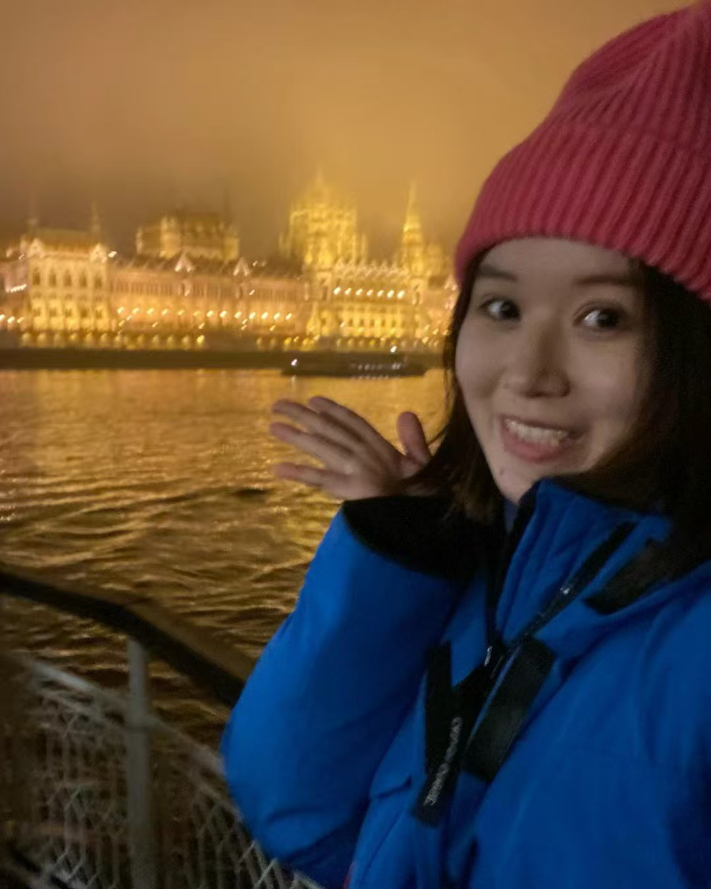
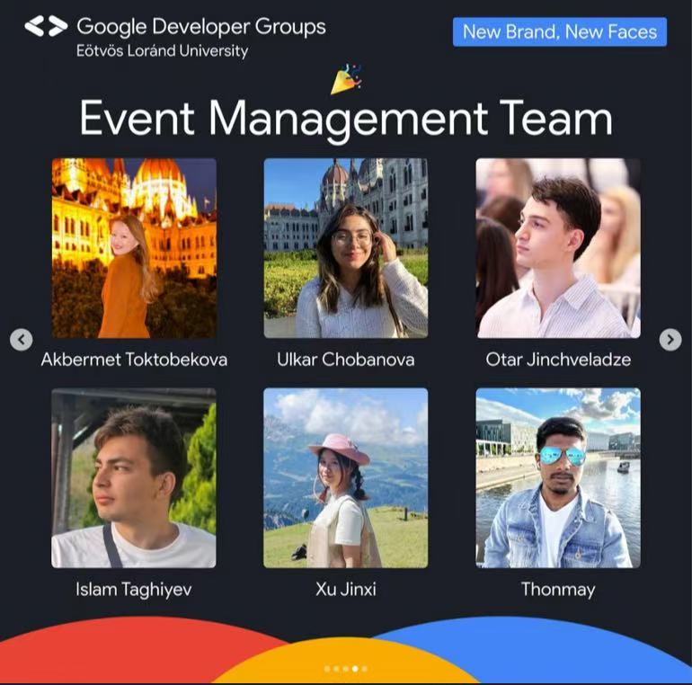
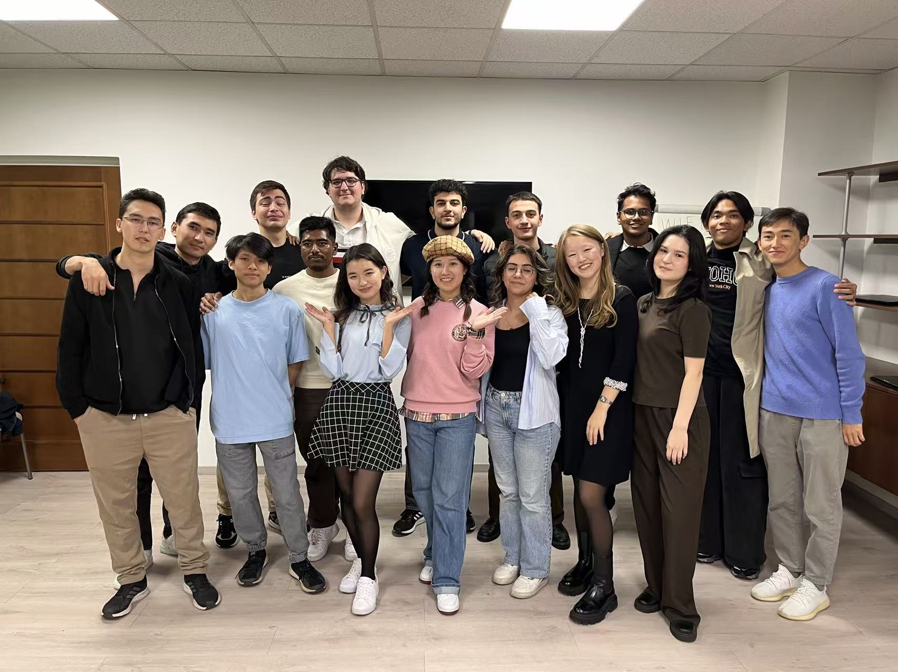
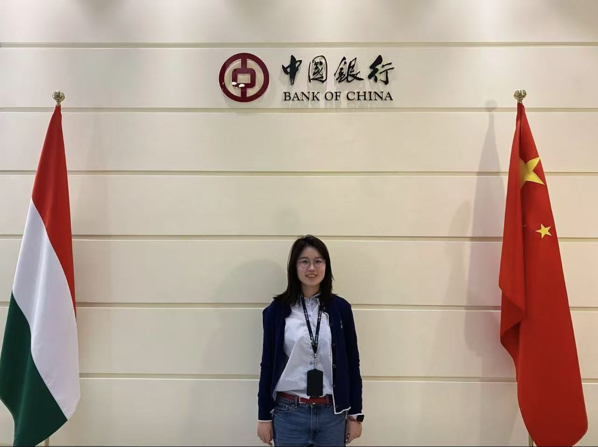
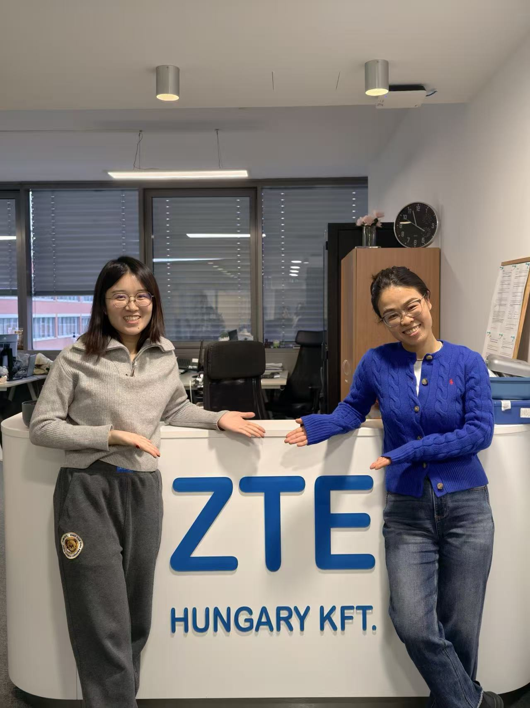
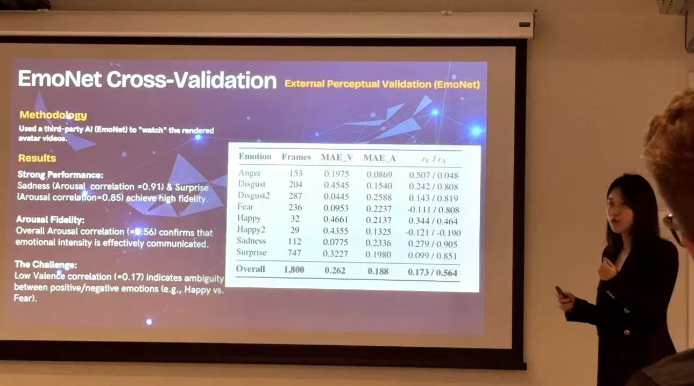
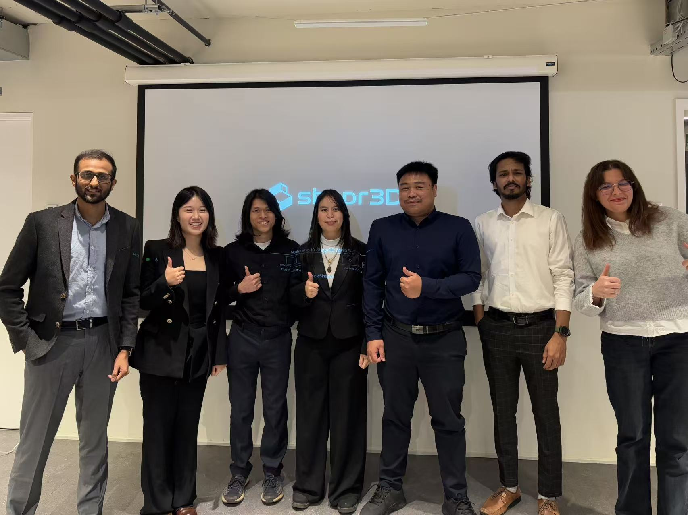
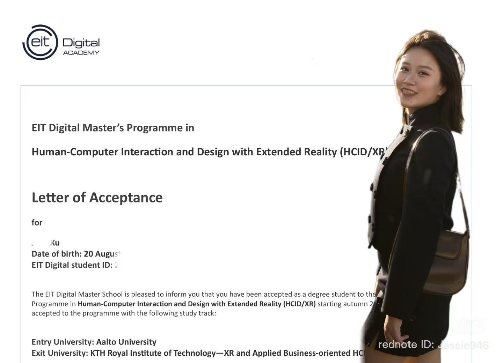

Budapest, Hungary
ELTE Computer Science
A scholarship brought me from China to Budapest, where I built my foundation in computer science and started saying yes to opportunities beyond the classroom.
Explore the foundation ↗ScholarshipBudapestCS foundation